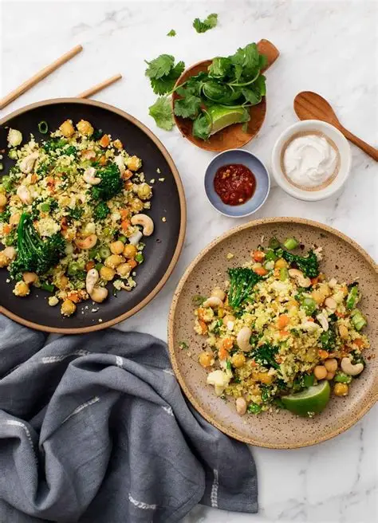
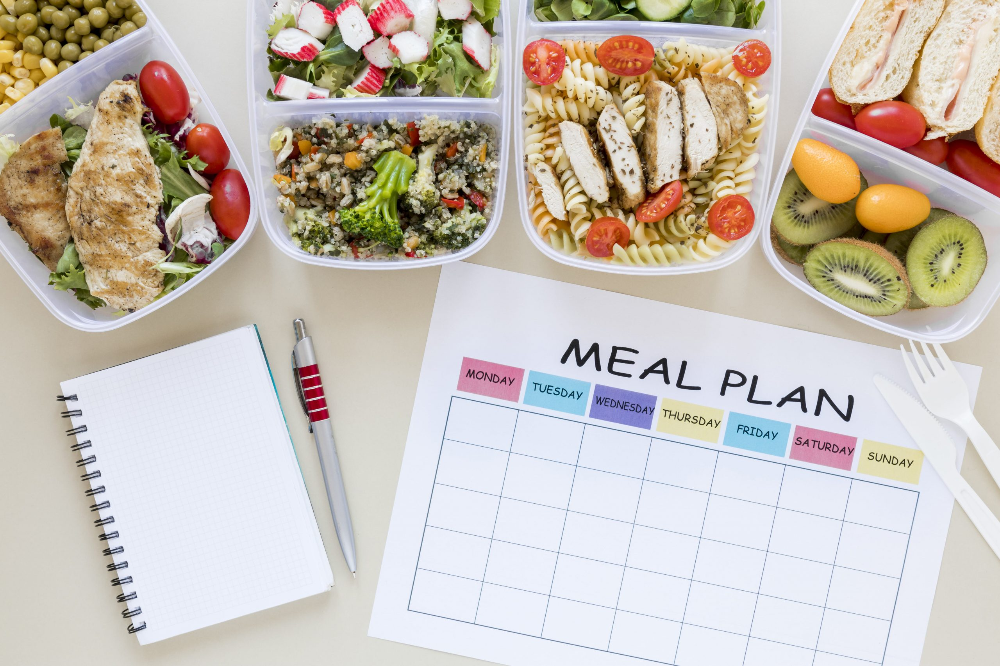
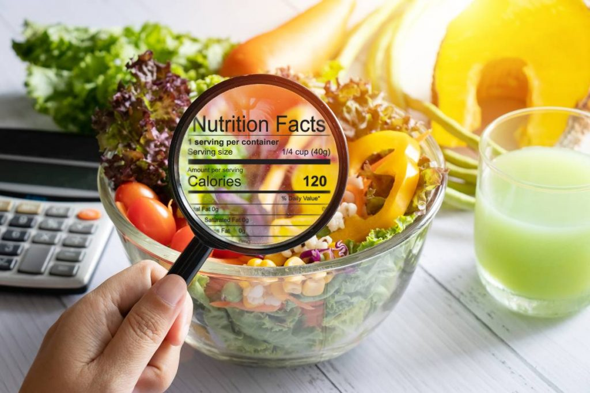

🌿 Smart Nutrition Platform
Eat smart!
Fuel your body right!
Tell us your nutritional deficiencies and health goals — we'll suggest the exact foods your body needs.
Science-Backed
Indian Food Focus
Free to Use

Balanced Meal
320 kcal
Protein Goal
78g / 100g
Hydration
6 / 8 glasses
Everything you need for a healthier life
One platform. All your nutrition needs covered.

🥗 Food Suggestions
Personalised food recommendations based on your specific health goals and nutritional deficiencies.

📅 Meal Plans
Curated 7-day Indian meal plans tailored to your dietary goals — from weight loss to muscle gain.

📊 Food Analysis
Detailed macro breakdown with calorie count, protein, fats and personalised improvement tips.

📈 Progress Tracking
Monitor sleep, water intake and daily nutrition to stay on track with your health goals.